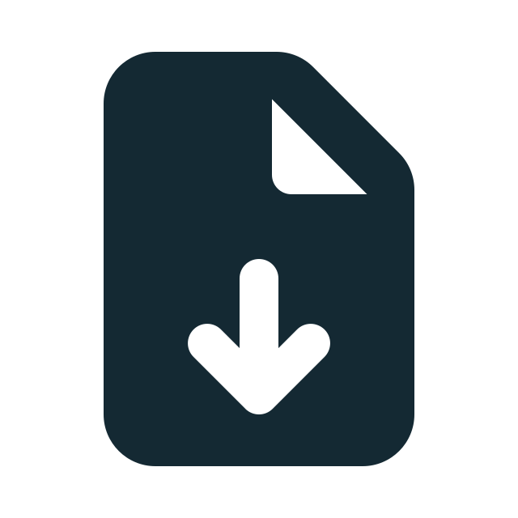

Hvad er digital sikkerhed?
Helt kort kan man sige, at digital sikkerhed handler om, hvordan du beskytter dig selv, dine enheder og dine personlige oplysninger, når du er online eller på telefonen.
Internettet giver os mulighed for at holde kontakten med familie og venner, lave indkøb, læse nyheder, tjekke vores mail og meget mere. Desværre findes der også svindlere, der forsøger at udnytte internettet for at stjæle vores personlige oplysninger og penge.
Men bare rolig, for du behøver ikke være ekspert for at bruge internettet trygt og sikkert. Her på siden har vi gjort vores bedste for at samle viden og gode råd til, hvordan du kommer godt i gang med at beskytte din data, fordi vi tror på at digital sikkerhed er for os alle sammen uanset alder eller baggrund.
Hvor starter jeg?
Det kan nemt virke uoverskueligt, hvordan man kommer i gang med at sikre sin personlige information bedre, særligt hvis man i forvejen føler sig usikker i brugen af computer og internettet. Derfor giver denne artikel dig et overblik over de vigtigste emner.
Når du føler dig bedre rustet og klar til at udforske flere emner omkring digital sikkerhed, kan du finde alle vores artikler under fanen “Viden og rådgivning”.
Et stærkt kodeord
Dit kodeord eller password (engelsk for kodeord) er det første led i at holde svindlere ude. Derfor er det vigtigt, at dine kodeord er forskellige, ikke indeholder dit navn eller anden personlig information, og at de indeholder både tal, tegn og bogstaver. Men vi forstår godt, at det til gengæld skaber tvivl om, hvordan man husker alle ens mange forskellige unikke koder.
I artiklen “Et stærkt kodeord” går vi mere i dybden med, hvordan du laver stærke kodeord, og måske endnu vigtigere, hvordan du kan få hjælp til at huske dem.
To-trins-verifikation
Selv stærke kodeord er ikke altid nok for at holde svindlerne ude. To-trins-verifikation kan ses som en ekstra lås, hvor din identitet skal bekræftes. Det fungerer lidt ligesom MitID, og kan for eksempel ske via SMS. Det kan godt virke lidt besværligt og svært at forstå, men hvis en svindler skal bruge både dit stærke unikke kodeord, men samtidig have adgang til din telefon, så er din konto ekstra godt beskyttet.
Når du er klar, kan du læse mere om hvordan to-trins-verifikation virker og hvordan du kommer i gang med at bruge det.

Download artikel